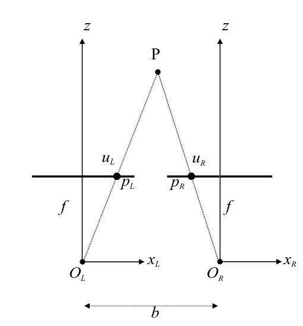

Stereo vision
We would like to infer 3d data from a 2d image. Getting from 3d to 2d is rather easy (Perspective projection ) but the opposite is quite hard. In order to solve this problem we need to use stereo vision: basically use more 2d images to infer 3d dimensions of objects. 
we can now compute the values as:
How to infer data between the two points when we are not in optimal conditions? Stereo geometry